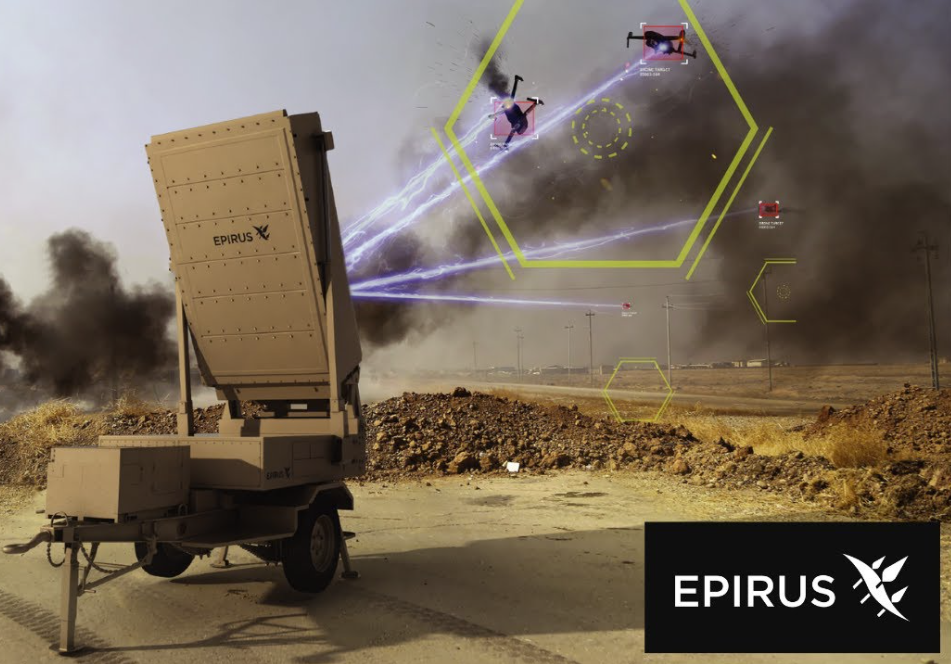
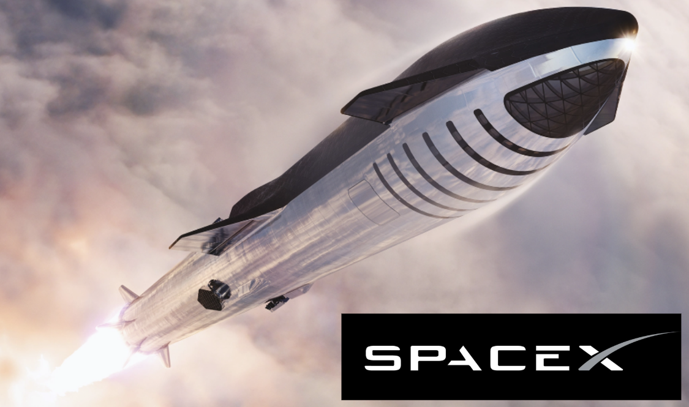

About MeMy name is Michael Krinsky. I am currently an undergraduate student studying at the University of California, Irvine for a degree in computer science. I have experience working at SpaceX as a Software Engineering intern, and am currently working as the Chief Engineer for the UCI Rocket Project attempting to break the undergraduate launch record for methalox powered rockets. |
 |
| My freshman year of high school, I joined the 2-time world champion FIRST Robotics team at my high school where I gained extensive knowledge in mechanical design, manufacturing, and programming, and I eventually progressed to the role of Design Team Lead in my junior year. Despite the COVID pandemic disrupting our competition season, I am proud to say that our team qualified for the World Championships every year, even ranking number one in our division at Worlds in 2020. |  |
| During the pandemic, I began working on my own personal projects and developing my skills as a web developer. I developed a banking application and a grocery application using Angular and Spring Boot, gaining valuable experience in full-stack development. When I came to the University of California, Irvine, I continued to expand my web development skills when I took up the position of web developer for UCI's Student Center and Event Services. |  |
| The next summer, I was given the opportunity to work as a Software Engineering Intern for the Aerospace Corporation, where I was tasked with defining, developing and presenting on the web applications and services that I created over the summer. These projects ranged from developing Flask web services to monitor critical data metrics for the AeroTel telescope to building data pathways for a high fidelity satellite simulation. Concluding this experience, I presented my work to other departments and leaders at the facility in El Segundo, California. |  |
| When I returned to school, I was accepted onto the UCI Rocket Project, a team of 40 undergraduate students attempting to launch UCI's first ever methalox rocket. I spent my first year on the team as an avionics member, where I wroted the embedded software we used to launch our first ever rocket to 9300 feet in the Spring of 2023. After the launch, we began working on a new rocket with the goal of breaking the undergraduate launch record for methalox rockets, and I became the Lead Avionics Engineer for the team. |  |
| The summer after my sophomore year, I interned at Epirus as a Machine Learning/Software Engineering intern, working on Leonidas, a directed energy system that uses machine learning to detect and neutralize drone swarms. Within the production software team, I developed an automated network configuration system and GUI using Rust, Python, and React. During the second half of my internship, I transitioned to the machine learning team, where I created the machine learning pipeline for detecting drones using infrared cameras. |  |
| Following this experience, I took a quarter off before returning to school to intern at SpaceX as a Software Engineering intern. I worked as a full-stack developer for Starship's next generation Starship fleet planning software. I developed a robust backend API and database to allow the efficient distribution of many simulation runs across a high power compute cluster and introduced new features to improve the scheduling of simulation runs and the display of results for analysis and modification on our GUI in Typescript and Python. |  |